PathoFinder
AI-assisted radiographic measurement platform that turns hip, leg, spine and hand X-rays into clinical-grade morphology, alignment and bone-age reports — in daily use at hospitals and radiology centers in Iran.
PathoFinder reads a plain radiograph and returns the exact measurements a radiologist would otherwise calculate by hand — Tönnis angle, LCEA and CCD angle on a hip film, CPAK zone and full-leg alignment on a scanogram, curvature angles on a spine series, and a Greulich–Pyle bone-age stage on a hand X-ray. When auto-detection lands, the radiologist reviews and confirms it. When it fails — which happens often enough on real, noisy clinical films — the radiologist has to manually place the anatomical landmarks themselves before the study can move forward. My scope was that entire review layer: the four per-modality measurement workspaces, the manual-correction flow after a failed detection, the printable clinical report, and the study-list operations view radiologists and hospital staff use to triage hundreds of cases.
Four measurement workspaces sharing one interaction pattern: the film with landmark overlays in the center, a numbered category grid for that modality's clinical values, and — whenever auto-detection fails — a clear recovery flow that hands control back to the radiologist. Every workspace collapses into the same printable clinical report format, and a study only becomes Confirmed once a radiologist has explicitly signed off on it.
Dashboard.png
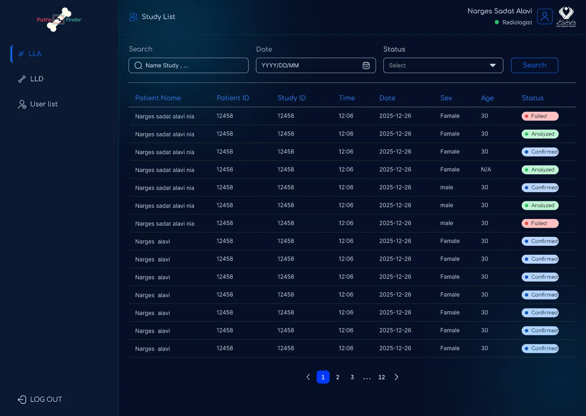
LLA.png
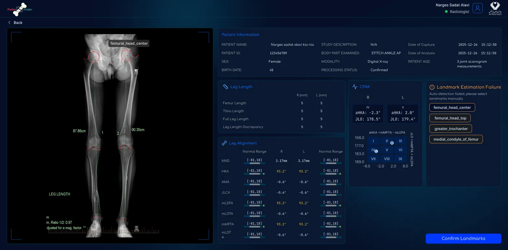
panel__AP.png
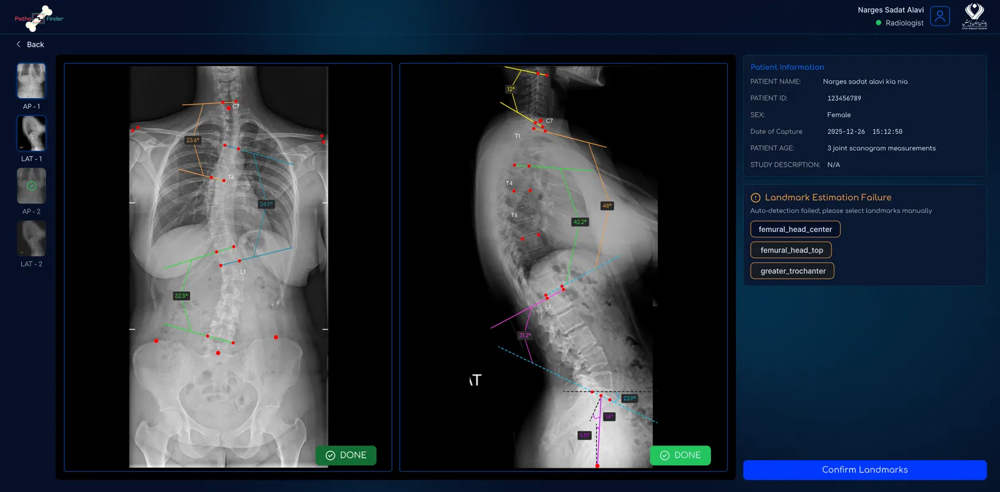
panel__AP-1.png
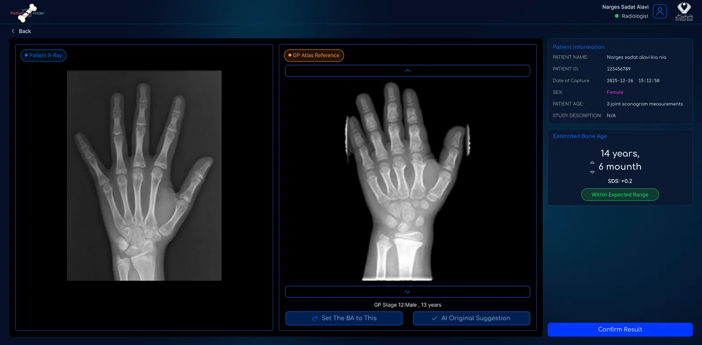
A4_-__report_HIP.png
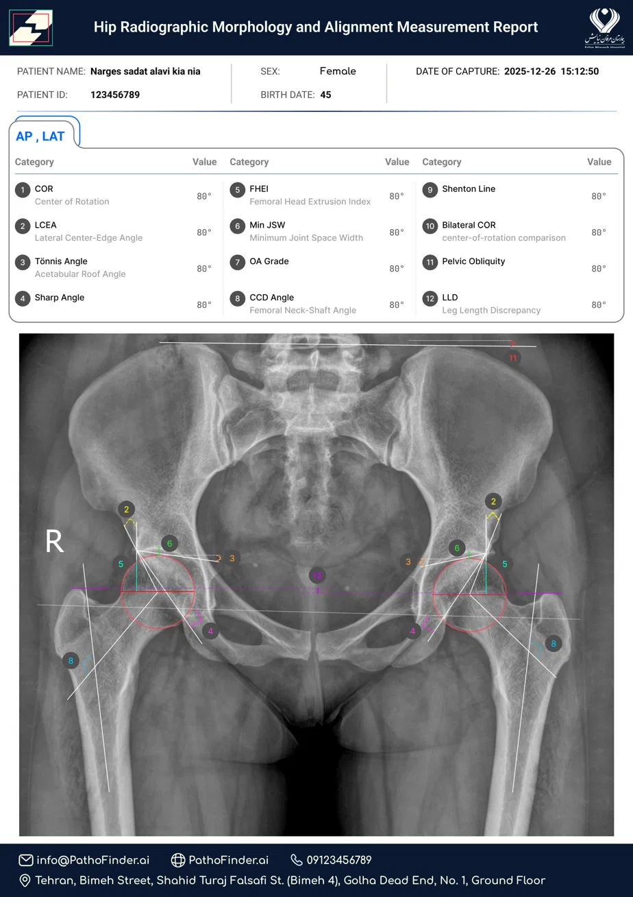
A4_-__report-1.png
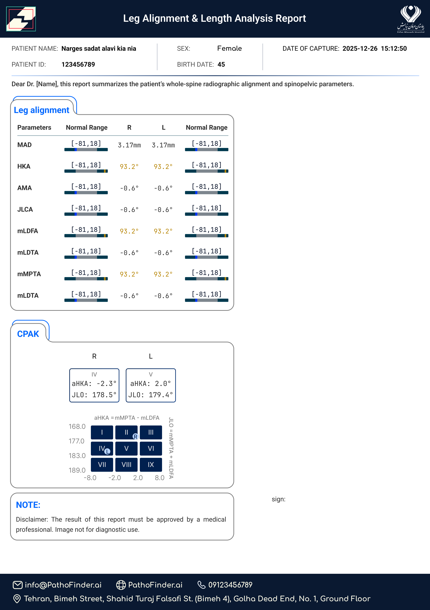
A4_-__report_foot_ap.png
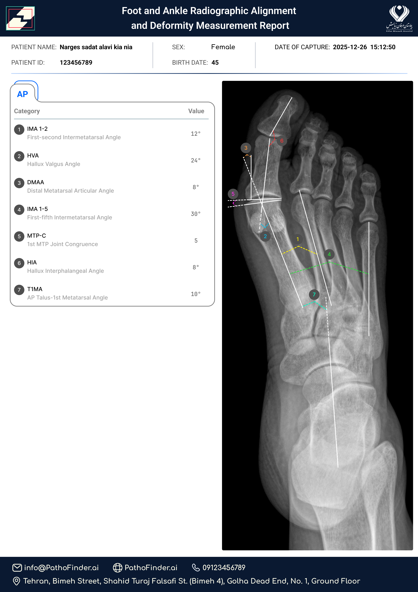
A4_-__report_KNEE_ap.png
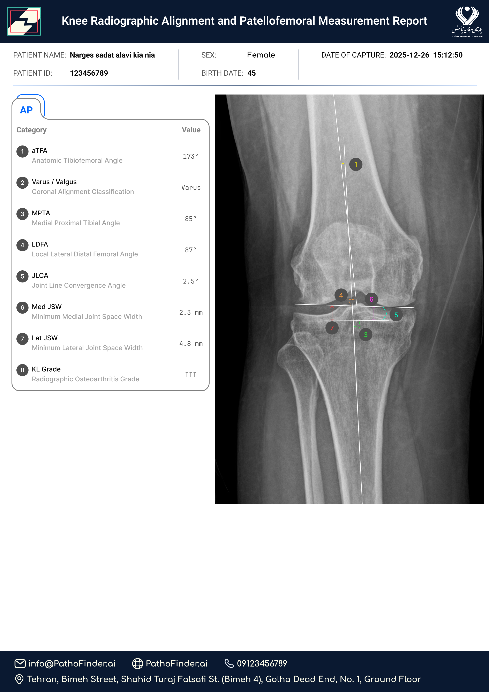
A4_-__report.png
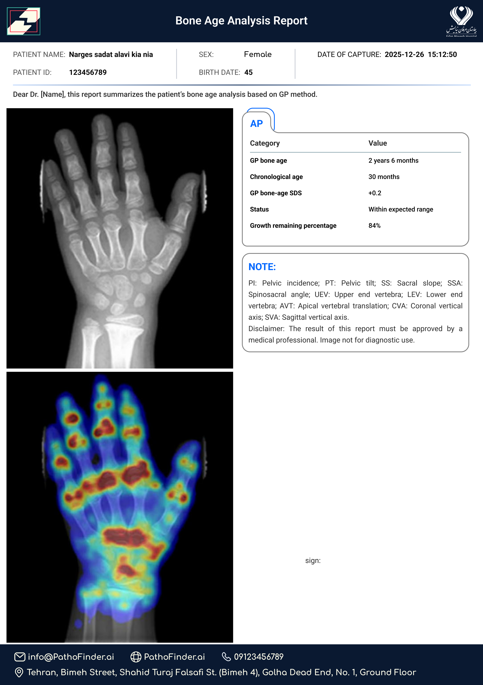
A4_-__report_LAT.png
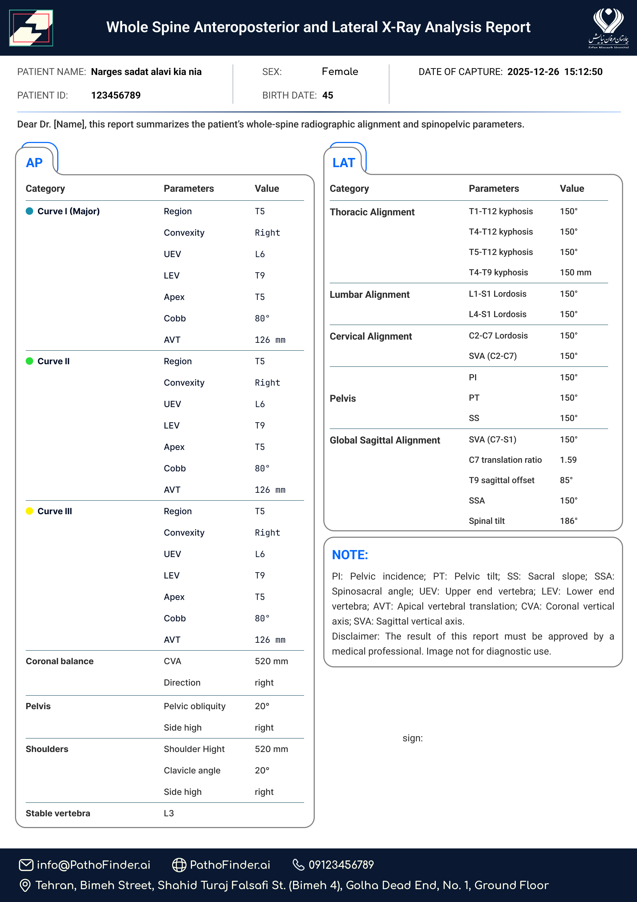
LAT-print_report_a5.png
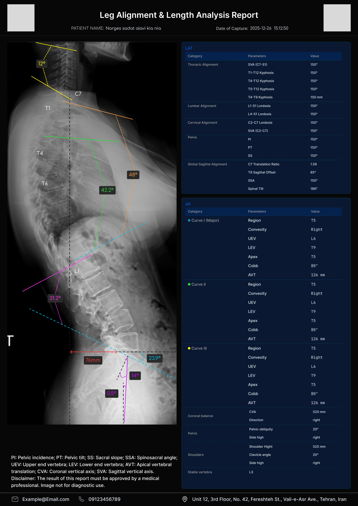